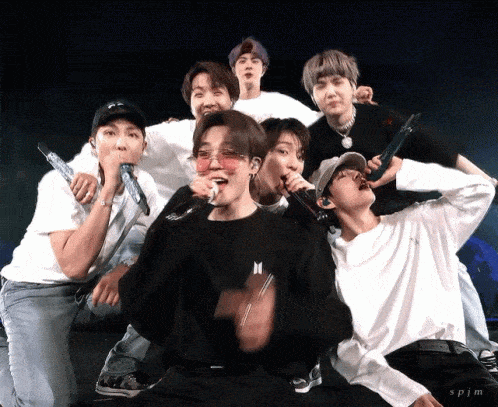
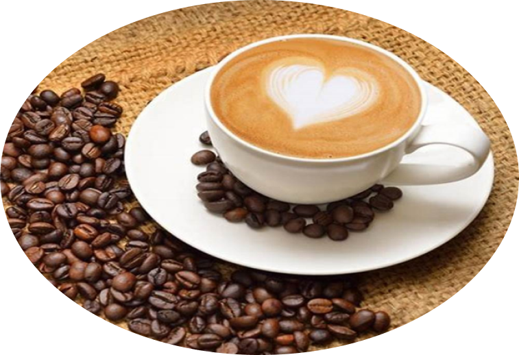
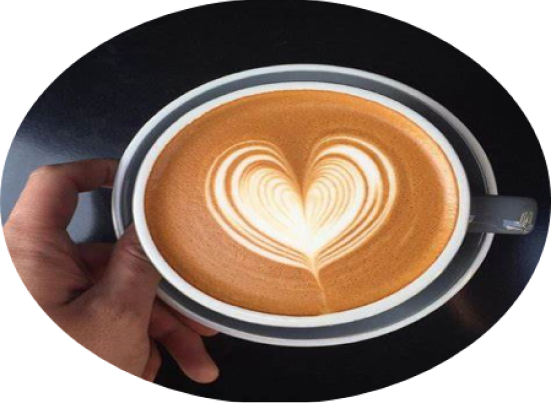
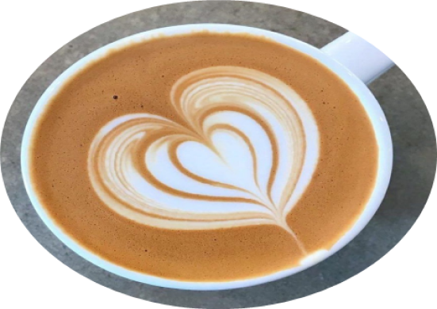
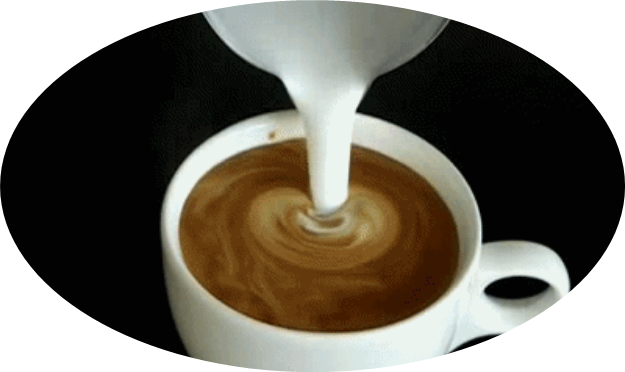
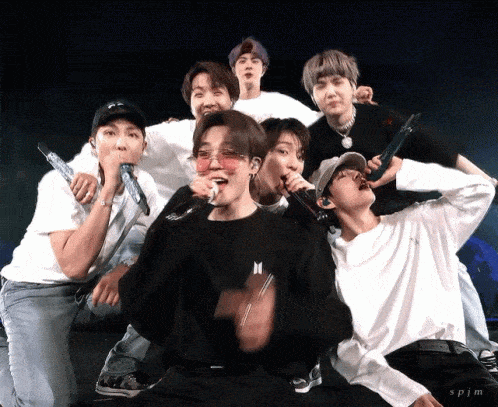
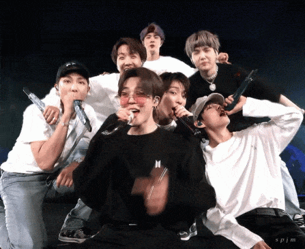

Napjainkban egyre nagyobb teret hódít magának a K-pop (koreai popzene).
Tarolnak a K-pop népszerű lány- és fiúbandái, köztük a Blackpink négytagú lánybanda, valamint a BTS héttagú fiúbanda.
Ezért is szeretünk volna Sopron városában egy ilyen kávézót nyitni, ahol összegyűlhetnek a K-pop rajongói.

Mivel a K pop zenék videóklipjei mindig színesek, látványosak és figyelemfelkeltőek, ezért igyekeztük a kávézó interior design-ját is ennek megfelelően kialakítani.
A kávézó falai tele vannak a K pop bandák énekeseinek és énekesnőinek képeivel, posztereivel például megtalálható a Blackpink-ből Jisoo, Jennie, Lisa és Rosé, a BTS-ből pedig Jin, Suga, Jimin, Jungkook, V, RM, J-Hope.
Értelemszerűen csakis kizárólag K-pop zeneszámok mennek a háttérben, minden nap 16.00 és 18.00 óra között kívánságműsor van, ilyenkor a vendégek dönthetik el, hogy milyen K-pop sláger szóljon.
18 órától 20 óráig pedig K-pop karaoke-t tartunk, ahol a legbátrabbak kipróbálhatják magukat egy-egy K-pop sztár helyében, elénekelve dalaikat a LED-falon kivetített szöveget olvasva.
"Olyan világban élünk, ahol keményen kell dolgoznunk, hogy elérjük, amit akarunk." - Jisoo (Blackpink)
Termékek bemutatása
1. K-pop rajongói kávé

Másnéven latte art szív.
Toronymagasan ez a legnépszerűbb, legfelkapotabb termékünk, kétségtelenül mind a fiatalok, mind az idősebb korosztály kedvence.
Nemmellesleg ez volt a legelső termékünk, amelyet a K-pop kávézó készített.
Azóta is a sikere töretlen, mindennap felkerül a toplista élére.

Sikere egyrészt a mennyei ízének és állagának köszönhető, másrészt a csodás szív díszítésnek is.
Ezt nem érdemes kihagyni, így minden kedves meglévő és leendő vendégünknek sok-sok szeretettel ajánljuk!!!

2. Hét hatású zöld tea
A zöld tea nem erjesztett, vagyis a növény második legfeldolgozatlanabb formája.
Legnagyobb része Kínából származik. Egyedül a fehér tea, ami kevesebb feldolgozáson esik keresztül, de nem nő annyi ideig, hogy olyan erős hatásokkal rendelkezzen, mint a zöld tea.
Zöld tea egészségre gyakorolt előnyei:
1. Erős antioxidáns tulajdonságokat mutat
Bár ez a terület még további kutatásokat igényel, az antioxidánsokra mintegy megelőző gyógyírként tekinthetsz, amely megvédi a szervezeted a sérülésektől, betegségektől és késlelteti az öregedést.
2. Védhet a szívbetegségektől
Sok ember bevonásával, Japánban készültek hosszú távú hatásokat figyelő tanulmányok is, melyek azt találtak, hogy azok az emberek körében, akik több zöld teát ittak, kisebb eséllyel alakult ki szív-és érrendszeri probléma, mint akik nem ittak.
3. Serkentheti a véráramot
A kutatók úgy vélik, hogy a zöld tea véráramserkentő hatásokkal bírhat, és megóvhat számos szívhez köthető betegségtől
4. Testzsírcsökkentő hatásokkal is rendelkezhet
Egy másik tanulmányban, amely szintén a szív egészségére koncentrált, azt találták, hogy a zöld tea kivonat segített 10%-kal csökkenteni a résztvevők testzsírszázalékát.
5. Segíthet a súlycsökkentésben
A zöld tea természetes, kellemes ízzel rendelkezik, és mellette alacsony kalóriatartalommal.
6. Gyulladáscsökkentő hatásokkal is rendelkezhet
Az erős antioxidáns hatása révén - mely egyben gyulladáscsökkentő is- , a zöld tea reményt adhat mindenkinek, aki gyulladásos betegségekkel küzd
7. Mikróbaellenes tulajdonságokkal is rendelkezik
A zöld teáról bizonyított, hogy baktériumellenes hatásai révén megelőzheti a fertőzések kialakulását
3. Ajándék K pop banda bögrék
„Hagyd, hogy a mosolyod megváltoztassa a világot, de ne hagyd, hogy a világ változtassa meg a mosolyodat." (Jimin, BTS)
Azok a vendégek, akik a fent felsorolt két termék – K-pop rajongói kávé vagy a hét hatású zöld tea – közül valamelyiket választják őket meglepjük egy ajándék bögrével.
Két meglepetés bögre között lehet választani az egyiken a Blackpink négytagú lánybanda, míg a másikon a BTS héttagú fiúbanda képei láthatóak.
Természetesen a bögréket külön is meglehet vásárolni, áruk 5000 Ft/db.
Az ajánlat 2024.12.05. és 2024.12.23. között tart, a készlet erejéig!!!


 
